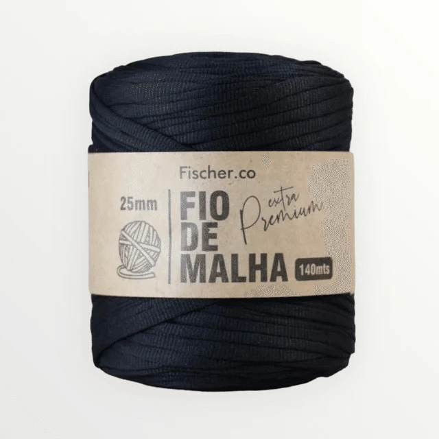
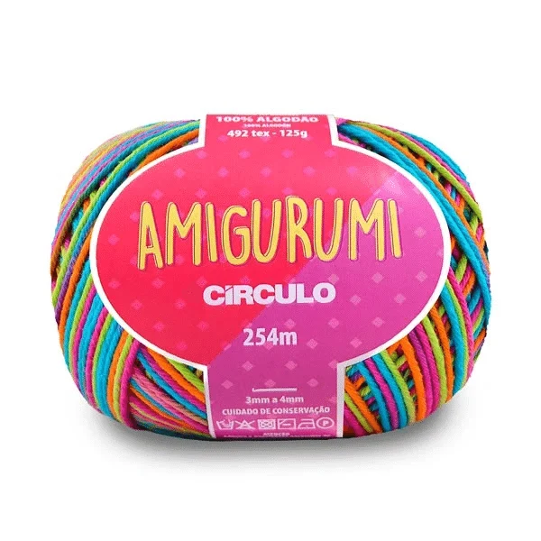

Fio deMalha27 cores para explorar
Do primeiro novelo ao acabamento final, encontre fios, cores e texturas para transformar cada ideia em uma criação com a sua assinatura.

Fio de
Amigurumi49 cores para imaginarEscolha a textura, encontre a cor e leve para casa o material que combina com a sua próxima ideia.
Escolha a sua técnica favorita e transforme cada fio em uma criação cheia de estilo.
Textura, movimento e presença.
Personagens com alma e cor.
Ponto a ponto, do seu jeito.
Selecionamos fios com toque, regularidade e cores que fazem diferença na hora de criar.
Explore novidades, monte o carrinho, informe seu CEP e escolha entrega ou retirada.
Conhecer todo o catálogo →